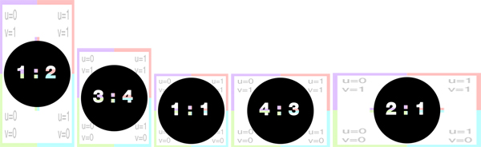
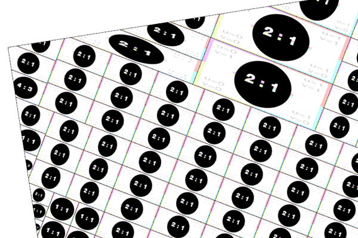
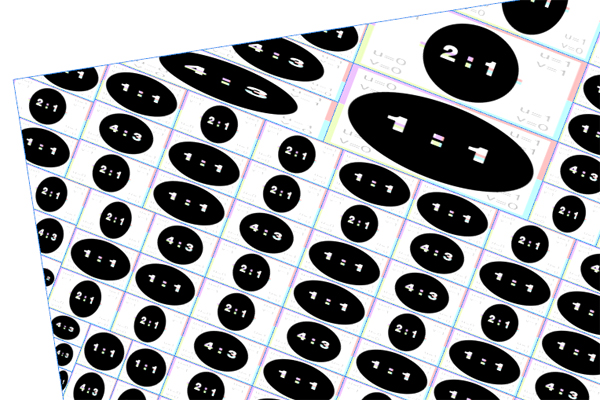

imageApproxRatio
Syntax
string imageApproxRatio(searchQuery, axesRatio, n)
Parameters
- searchQuery (string)
Search query to apply on list of all files in the workspace. See fileSearch for details about the syntax. - axesRatio (string)
"xy", "xz", "yx", "yz", "zx", "zy" Defines which scope axes ratio is used as a reference. - n (float)
Number (integer >= 1) of textures to consider (one is randomly picked out of the n best textures).
Returns
Texture with one of the n best ratio matches (according to axesRatio).
Description
This function returns one of the n textures with the best ratio match, from the file list specified in searchQuery, according to the specified combination of axes.
Note: imageApproxRatio(path, axesRatio, 1) = imageBestRatio(path, axesRatio)
Related
- assetApproxRatio function
- assetApproxSize function
- assetBestRatio function
- assetBestSize function
- assetFitSize function
- fileBasename function
- fileDirectory function
- fileExtension function
- fileName function
- fileRandom function
- imageBestRatio function
Examples
Setting up texturing based on the best pixel ratio
The goal is to set up the texturing, depending on the best pixel ratio of the list of desired textures. The following textures all have different resolutions.

CGA example:
Note: Note the color variations in the next two images by using only the "best ratio" (n = 1) and "choose randomly one of the best three ratios" (n = 3).
n = 1:
Lot --> s('.9,'.9,'.9) center(xz) recursiveSplit(0)
recursiveSplit(n) -->
case scope.sx >= 1.5 && scope.sz >= 1.5:
split(x){~scope.sx/3: split(z){~scope.sz/3: recursiveSplit(n+1)}*}*
else: doTexturing
doTexturing -->
set(material.colormap, imageApproxRatio("/myProject/assets/textures/*.jpg", "xz",1))
setupProjection(0, scope.xz, scope.sx, -scope.sz)
projectUV(0)

n = 3:
..
set(material.colormap, imageApproxRatio("/myProject/assets/textures/*.jpg", "xz", 3))
..

Copyright ©2008-2020 Esri R&D Center Zurich. All rights reserved.